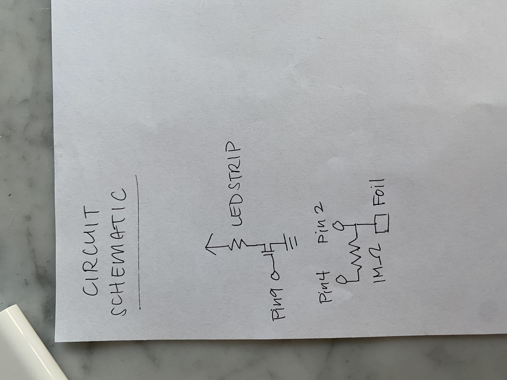

Check out a demo of my circuit HERE!
// Mileena Ros
// HCDE 439
// Feb 1421 2022
// References: Arduino Playground Capacitive Sensing Library reference at
// https://playground.arduino.cc/Main/CapacitiveSensor/ and Fade example
#include
// 1 megaohm resistor between pins 4 and 2, pin 4 is sendPin, pin 2 is receivePin
CapacitiveSensor cs_4_2 = CapacitiveSensor(4, 2);
int led = 9;
int brightness = 0;
int fadeAmount = 5;
void setup() {
// initialize pin 9 to correspond to led strip
pinMode(led, OUTPUT);
// re-calibration - checking lowest sensed value to use as baseline - every 4s
cs_4_2.set_CS_AutocaL_Millis(4000);
}
void loop() {
// returns a long containing the sensed capacitance and
// keeps track of the lowest sensed value for reference
long total = cs_4_2.capacitiveSensor(30);
// if a high value of capacitance is sensed (value chosen
// based on test values that correspond to direct contact)
// then begin led fade
if (total >= 1000) {
// set the brightness of the led strip
analogWrite(led, brightness);
// change the brightness of the led strip based on fadeAmount
brightness = brightness + fadeAmount;
// if brightness is below 0 or above 255 (the range of
// analogWrite) reverse direction of fade
if (brightness <= 0 || brightness >= 255) {
fadeAmount = -fadeAmount;
}
// delay for fade effect instead of instant change
delay(30);
}
}